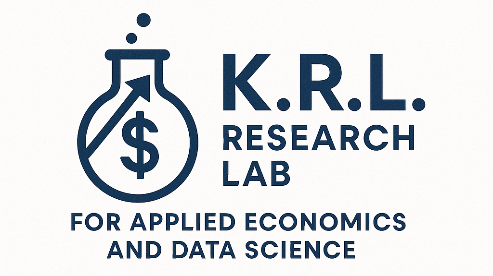

About the Lab
The K.R.L. Lab is a research space dedicated to applied econometrics and data science. Based at University of Toronto and led by Professor Nazanin Khazra, the lab brings together undergraduate and graduate researchers to work on real-world projects.
Our mission is to create a collaborative environment where students learn to ask meaningful questions, analyze data critically, and understand the social impact of evidence-based policy.
Student Opportunities
- Hands-on research experience
- Advanced data analysis & coding
- Exposure to real economic policy
- One-on-one mentorship

Current Research Assistants
Join the Lab
Applications are open for Winter 2026. We value intellectual curiosity above all else.
Apply Here